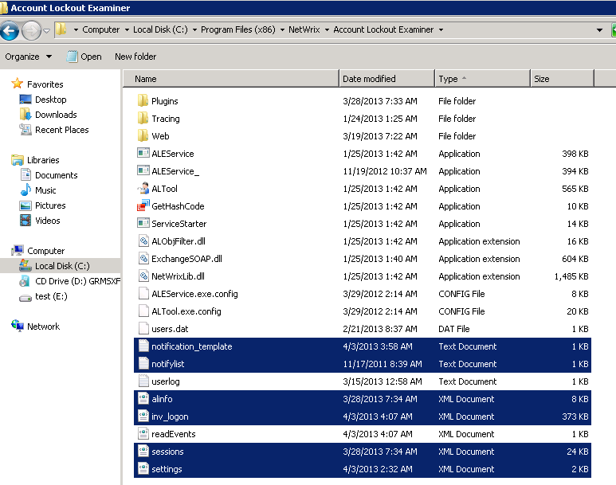
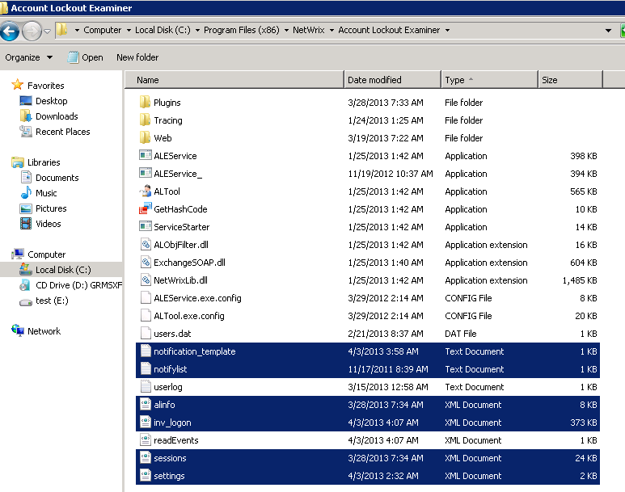

How do I migrate NetWrix Account Lockout Examiner to a different server?
To migrate NetWrix Account Lockout Examiner to a different server, perform the following steps:

To migrate NetWrix Account Lockout Examiner to a different server, perform the following steps:
- Install NetWrix Account Lockout Examiner on a new server.
- Stop the product service on a new server
- Stop the NetWrix Account Lockout Examiner service on the old server
- Copy the following files from the old NetWrix Account Lockout Examiner installation directory to the same location on the new server:
- alinfo.xml,
- inv_logon.xml,
- settings.xml
- sessions.xml
- notification_template.txt (if you use non-default notification template)
- notifylist.txt (if you use granularity for notifications)
- Start the NetWrix Account Lockout Examiner service on the new server.
- If you are using the NetWrix Account Lockout Examiner Web Help-Desk Portal, install it on the new server.
